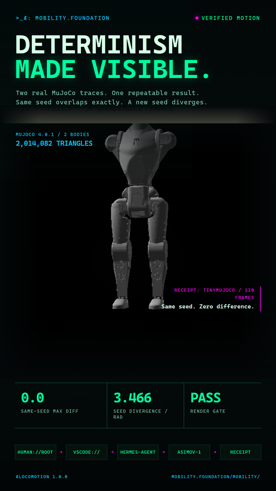

Verified 9:16 proof · 1080×1920 · MuJoCo 4.0.1 · render gate PASS
vscode:// is the review gate.
The editor holds the local build, inspection, and publication surface for mobility.foundation. It converts a human intent into a measured artifact only after the current receipt, dimensions, and authority path verify.
HUMAN://ROOT→
vscode://→
hermes-agent→
Asimov-1→
RECEIPT
Measured proof
0.0same-seed max difference
3.466389different-seed divergence / rad
2,014,082triangles
PASSrender gate
Authority boundary
human_review_required: true publish_allowed: false until HUMAN://ROOT review vscode:// is a review surface, not a grant opening this page grants no robot, browser, or shell authority